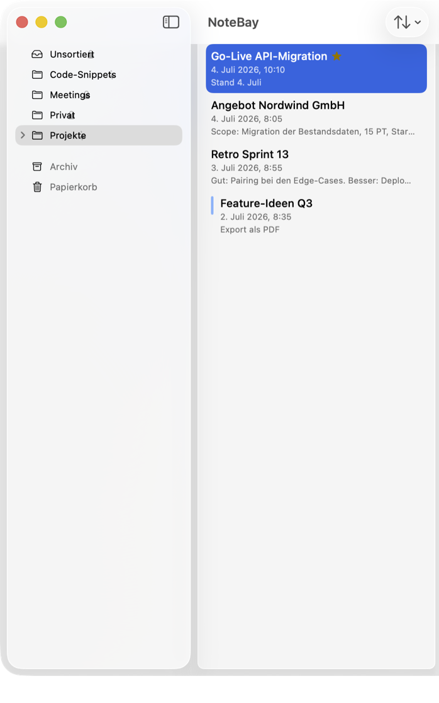
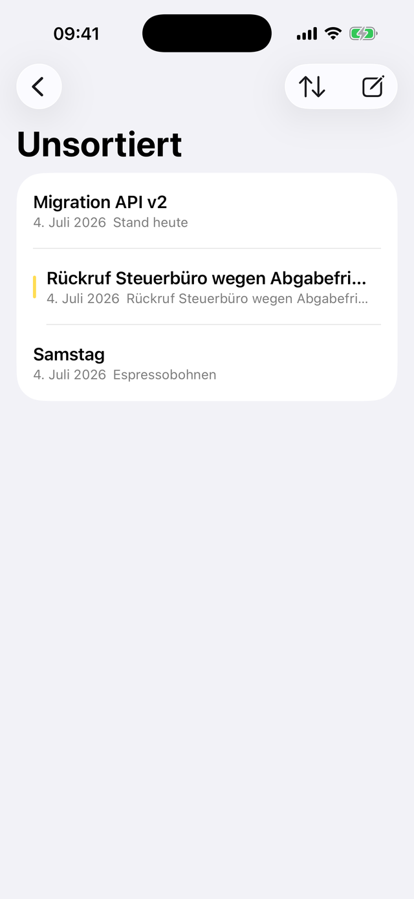
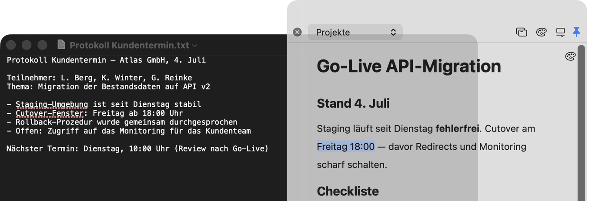
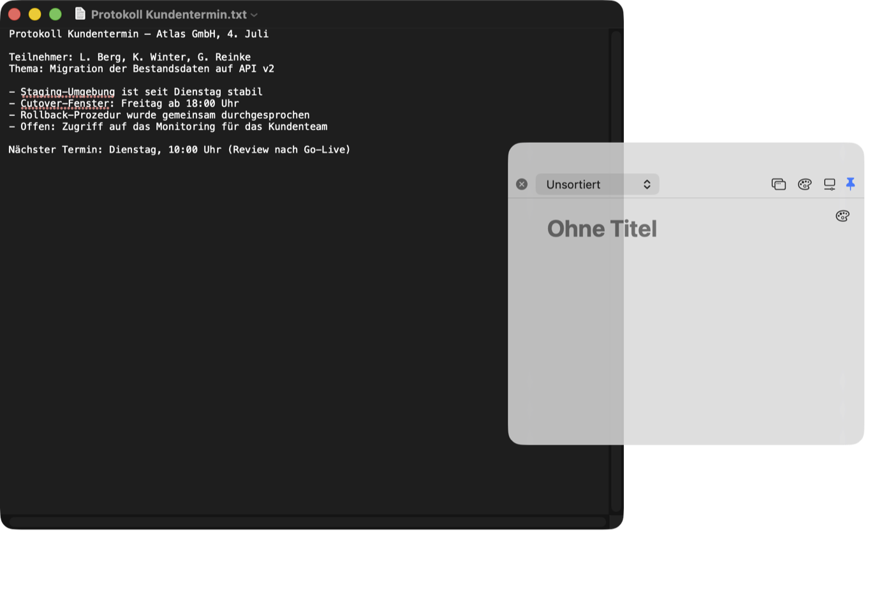
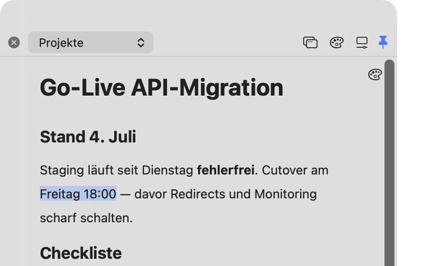
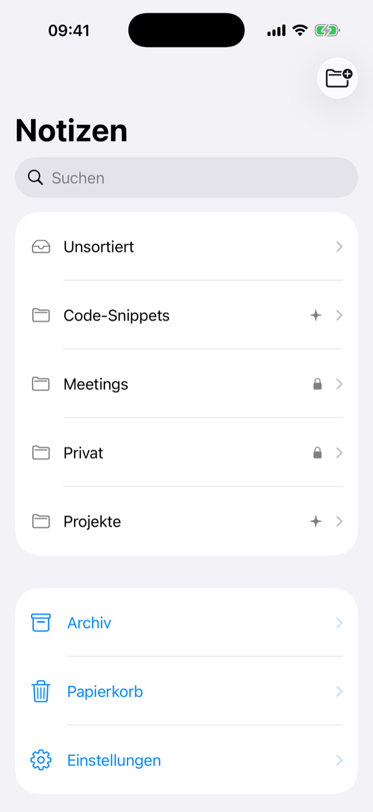

NoteBay
Native Notiz-App für Mac & iPhone.
Schnell notieren, sauber ordnen. Und wenn eine KI mitarbeiten soll, entscheidest du pro Ordner, was sie zu sehen bekommt.
Bald im App Store.



Die Notiz schwebt über allem
Öffne jede Notiz als eigenes kleines Fenster. Es bleibt über der App sichtbar, in der du gerade arbeitest, und stiehlt ihr beim Tippen nicht den Fokus.
Festhalten, ohne das Fenster zu wechseln
NoteBay sitzt in der Menüleiste. ⌥⌘N öffnet eine leere Notiz direkt
über deiner aktuellen Arbeit. Zwei Sätze getippt, Fenster zu, weiter.

Schreiben in Blöcken
## wird beim Tippen zur Überschrift, - [ ] zur Checkliste,
``` zum Codeblock. Wichtige Stellen markierst du in fünf Highlight-Farben.

Farben und Ordner
Gib Notizen eine Farbe und verschachtele Ordner, wie du willst. Am Ordnersymbol erkennst du, was deine KI sehen darf.

Auf dem iPhone dabei
Deine Notizen kommen über deine private iCloud aufs iPhone, ein eigenes Konto brauchst du dafür nicht. Unterwegs legst du neue Notizen direkt über das Home-Screen-Widget an. Wiederfinden übernimmt die Volltextsuche.
KI-Zugriff über MCP
NoteBay bringt einen lokalen MCP-Server mit. KI-Assistenten wie Claude lesen, erstellen und sortieren Notizen damit direkt in deiner Bibliothek — aber nur in Ordnern, die du per Rechtsklick freigegeben hast. Alles andere bleibt für die KI unsichtbar.
Was du damit anstellen kannst
- „Fass die Meeting-Notizen dieser Woche zu einer Übersicht zusammen.“
- „Leg für jedes offene Thema aus dem Protokoll eine eigene Notiz an.“
- „Räum den Ordner Projekte auf und benenne die Notizen einheitlich.“
- „Such alles zur API-Migration und stell mir einen Statusbericht zusammen.“
Was dabei geschützt bleibt
- Freigaben gelten pro Ordner. Was nicht freigegeben ist, taucht in keiner Antwort auf, nicht einmal in Fehlermeldungen.
- Der Server ist nur auf deinem Mac erreichbar und verlangt bei jeder Verbindung ein Pairing-Token.
- Bevor eine KI etwas ändert, sichert NoteBay den alten Stand als Snapshot — 30 Tage lang mit einem Klick wiederherstellbar.
- Jede Operation steht im Audit-Log. Werkzeuge zum Löschen gibt es im MCP nicht.
Einrichtung
{
"mcpServers": {
"notebay": {
"type": "http",
"url": "http://127.0.0.1:27431/mcp",
"headers": {
"Authorization": "Bearer <DEIN-TOKEN>"
}
}
}
}
Dein Token und das fertig ausgefüllte Snippet findest du in NoteBay unter Einstellungen → KI-Zugriff.
Für KI-Agenten gibt es ein fertiges Skill-Paket mit allen Werkzeugen, Beispielaufrufen und den Markdown-Konventionen.
Skill laden (ZIP)Häufige Fragen
Wo liegen meine Notizen — und wer kann sie sehen?
127.0.0.1 — er ist aus dem Netzwerk nicht erreichbar, und ohne
Pairing-Token wird jede Verbindung abgewiesen.Funktioniert NoteBay offline?
Was kostet NoteBay wirklich?
Kann eine KI meine Notizen löschen oder an geblockte Inhalte gelangen?
not_found. Und bevor
eine KI etwas ändert, entsteht automatisch ein Snapshot (30 Tage), den du mit einem
Klick wiederherstellst. Jede Operation steht im Audit-Log.Auf welchen Geräten läuft NoteBay?
Komme ich mit meinen Daten auch wieder raus?
.md-Dateien, Anhänge liegen daneben — mit relativen Verweisen.
Keine proprietäre Sackgasse.